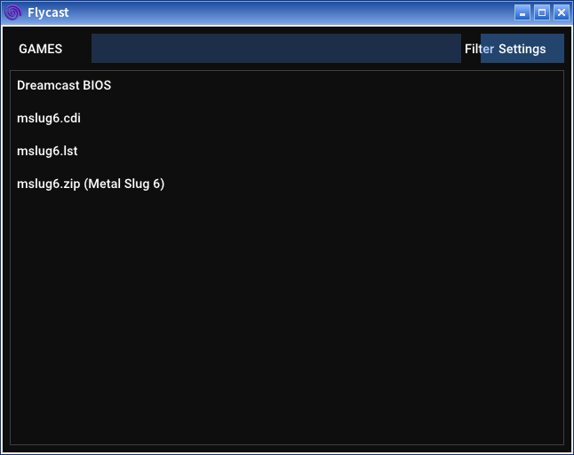
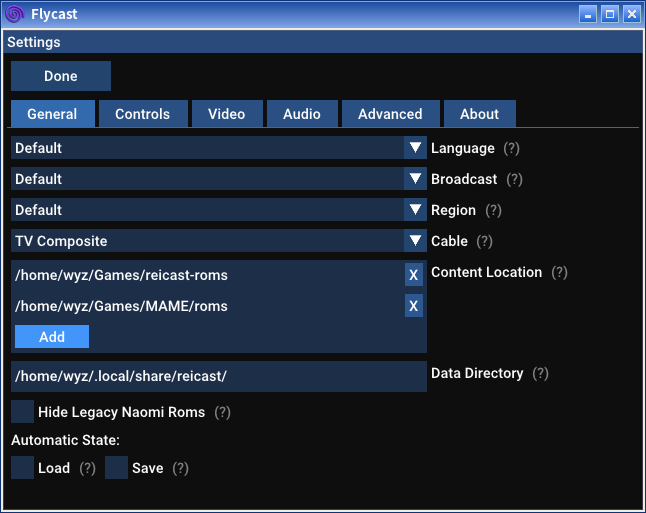
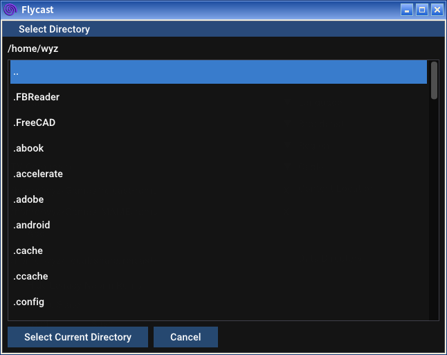
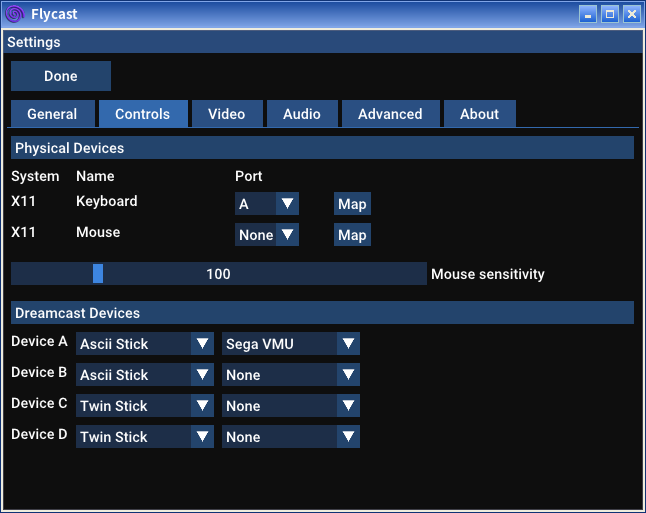
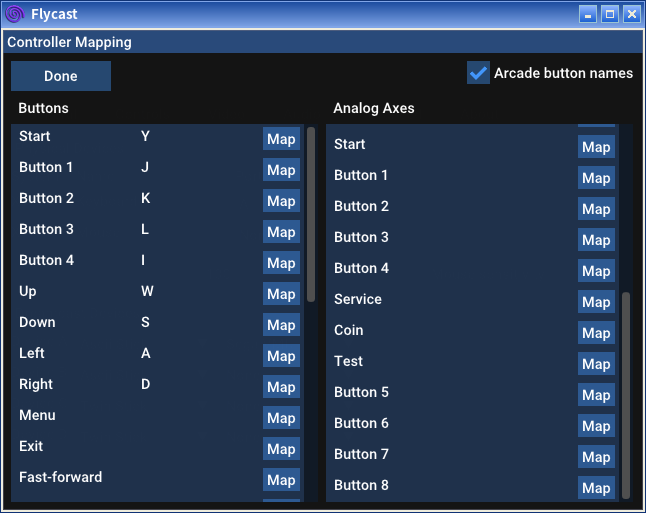

配置与使用说明
Flycast模拟器能稳定地运行街机版6代。不过，在不外接控制器的情况下只能一人使用。
Flycast的可设置项与使用者电脑的实际情况相关，故没法给各位一套“预设”，只能“现配现用”。为说明如何进行基本设置，写下此说明。
1.目录设置

如图，Flycast的界面极为简单。点击“Settings”按钮进入设置。

或许在你的电脑里，“Data Directory”一栏里的内容与截图的里很不一样，不必担心，保持默认即可。
点击中部的“Add”按钮，指向并设定Roms文件所在目录。

点击目录名前往所点目录，“..”为返回上一目录。最后点击“Select Current Directory”按钮设定目录。设置正确的例子可以参考上一张截图。
2.键位设置

在这个界面中，设置“Physical Devices”部分即可。
仍然，或许在你的电脑上显示出来的内容和图中有较大出入，不必担心。
Windows用户最好不要设定“Mouse”一项，有可能导致Flycast不能用鼠标操作。
设定“Keyboard”。点击这一行最后的“Map”按钮。

请先勾上右上角的“Arcade button names”复选框。
只设定左边“Button”一栏。
要设定的键有：Menu、Button 1-5、上下左右、Start、Coin、Service、Test。剩下的就随各位喜好了~
点击对应的“Map”按钮，按下想设定的键，就完成设定了。各键设定完成后按“Done”键保存并退出。
3.进入游戏
若设定正确，主界面里就会显示“mslug6.zip (Metal Slug 6)”一项。
点击该项即可进入游戏~
——wyz_2015
2021.6.21